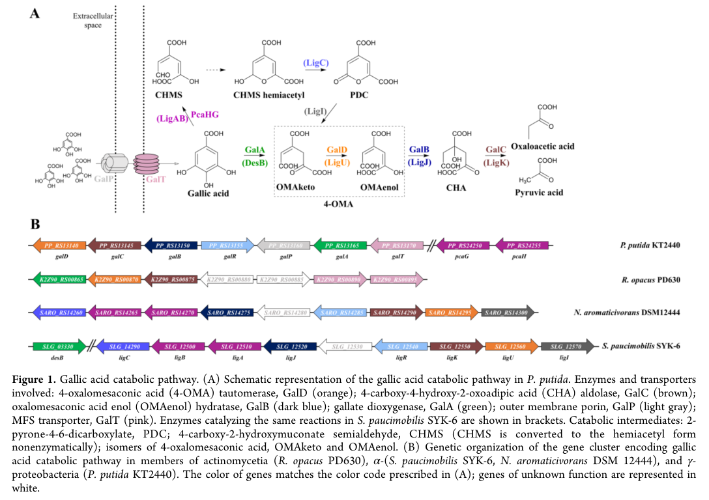

galP encodes a porin-like outer-membrane protein associated with the gallate degradation cluster. It is probably involved in uptake of gallate or related pathway substrates at low environmental concentrations, but the transported substrate remains incompletely defined.
| GO Term | Evidence | Action | Reason |
|---|---|---|---|
|
GO:0015288
porin activity
|
IEA
GO_REF:0000120 |
ACCEPT |
Summary: Porin activity is appropriate for GalP.
Reason: UniProt names GalP as a porin-like protein and places it in the outer membrane porin family.
Supporting Evidence:
file:PSEPK/galP/galP-uniprot.txt
Porin-like protein GalP
file:PSEPK/galP/galP-uniprot.txt
outer membrane porin
file:PSEPK/galP/galP-goa.tsv
GO:0015288 porin activity
file:PSEPK/galP/galP-deep-research-falcon.md
GalP is an **outer membrane porin** in the KT2440 **gallic acid (gallate) catabolic cluster** and is depicted as facilitating **entry of gallic acid into the periplasm**
|
|
GO:0016020
membrane
|
IEA
GO_REF:0000002 |
MODIFY |
Summary: Generic membrane localization is correct but should be refined to cell outer membrane for this porin-like protein.
Reason: GalP belongs to the outer membrane porin family; GO:0009279 is more specific than generic membrane for a Gram-negative bacterial porin.
Proposed replacements:
cell outer membrane
Supporting Evidence:
file:PSEPK/galP/galP-uniprot.txt
outer membrane porin
file:PSEPK/galP/galP-goa.tsv
GO:0016020 membrane
file:PSEPK/galP/galP-deep-research-falcon.md
The KT2440 pathway schematic explicitly places GalP in the **outer membrane**
|
|
GO:0055085
transmembrane transport
|
IEA
GO_REF:0000108 |
ACCEPT |
Summary: Transmembrane transport is plausible for GalP but remains broad because the transported substrate is not directly established.
Reason: Porin activity implies transport across a membrane; UniProt supports a probable role in gallate pathway uptake.
Supporting Evidence:
file:PSEPK/galP/galP-uniprot.txt
Probable transporter, possibly involved in the gallate
file:PSEPK/galP/galP-goa.tsv
GO:0055085 transmembrane transport
file:PSEPK/galP/galP-deep-research-falcon.md
recent primary literature specifically places **galP** in the **gallic acid (gallate) catabolic gene cluster**, where it is annotated as an **outer membrane porin** involved in gallate/gallic-acid utilization
|
|
GO:0009279
cell outer membrane
|
IC
file:PSEPK/galP/galP-uniprot.txt |
NEW |
Summary: GalP should have a cell outer membrane location annotation.
Reason: The current GOA fetch only has generic membrane, but UniProt identifies GalP as an outer membrane porin family protein; the inference is from the accepted porin activity annotation (GO:0015288) plus Gram-negative outer-membrane porin family context to cell outer membrane (GO:0009279). This NEW row records the curator inference, while the MODIFY row records how the generic GOA membrane annotation should be replaced.
Supporting Evidence:
file:PSEPK/galP/galP-uniprot.txt
outer membrane porin
file:PSEPK/galP/galP-uniprot.txt
Porin-like protein GalP
file:PSEPK/galP/galP-deep-research-falcon.md
The KT2440 pathway schematic explicitly places GalP in the **outer membrane**
|
Q: Does GalP transport gallate directly, or does it transport another gal-cluster intermediate or aromatic acid?
Q: Is GalP-mediated outer-membrane uptake essential, or is it redundant with other aromatic-acid transport systems (e.g. protocatechuate-related PcaK), given that strains lacking galT and galP still release gallic acid?
Experiment: Measure gallate uptake in galP mutant and complemented strains at low gallate concentrations and test purified GalP channel selectivity in reconstituted membranes.
Type: transport substrate specificity assay
The research report should be a detailed narrative explaining the function, biological processes, and localization of the gene product. Citations should be given for all claims.
You should prioritize authoritative reviews and primary scientific literature when conducting research. You can supplement
this with annotations you find in gene/protein databases, but these can be outdated or inaccurate.
We are specifically interested in the primary function of the gene - for enzymes, what reaction is catalyzed, and what is the substrate specificity? For transporters, what is the substrate? For structural proteins or adapters, what is the broader structural role? For signaling molecules, what is the role in the pathway.
We are interested in where in or outside the cell the gene product carries out its function.
We are also interested in the signaling or biochemical pathways in which the gene functions. We are less interested in broad pleiotropic effects, except where these elucidate the precise role.
Include evidence where possible. We are interested in both experimental evidence as well as inference from structure, evolution, or bioinformatic analysis. Precise studies should be prioritized over high-throughput, where available.
The symbol galP is used across biology for unrelated proteins (e.g., sugar transporters in other organisms). In Pseudomonas putida KT2440, recent primary literature specifically places galP in the gallic acid (gallate) catabolic gene cluster, where it is annotated as an outer membrane porin involved in gallate/gallic-acid utilization (dias2023fromdegraderto pages 4-6, kutraite2023developmentandapplication media 236896c6).
However, identifier cross-mapping is incomplete within the retrieved sources: the cluster schematic in KT2440 labels galP as PP_RS13160 (kutraite2023developmentandapplication media 236896c6), whereas the user-provided UniProt record for Q88JX6 lists ordered locus PP_2517 and describes an OprD-family porin-like protein GalP. Because the retrieved papers do not explicitly mention Q88JX6 or PP_2517, this report treats (i) the literature-defined KT2440 gallate-cluster GalP (PP_RS13160) and (ii) the user-specified UniProt GalP (Q88JX6; PP_2517) as functionally concordant but not definitively proven identical in this evidence set (kutraite2023developmentandapplication media 236896c6).
In KT2440, the gallic acid (gallate) catabolic pathway is organized in a dedicated gene cluster/operon context (kutraite2023developmentandapplication media 236896c6). The cluster includes enzymatic steps (e.g., galA, galB, galC, galD) and transport/regulatory components (including galT and galP) (kutraite2023developmentandapplication pages 3-4, kutraite2023developmentandapplication media 236896c6). Dias et al. describe the catabolic operon as galTAP (sometimes written galTAPR, reflecting inclusion of the regulator galR) (dias2023fromdegraderto pages 4-6).
Outer-membrane porins are typically β-barrel proteins with a hydrophobic exterior (interacting with lipids) and a hydrophilic lumen that can permit diffusion of small molecules. Selectivity is strongly influenced by pore geometry and extracellular loops that can fold into the lumen, as well as electrostatics and environment-dependent “gating” (mayse2023gatingofβbarrel pages 1-3).
This is relevant because UniProt describes Q88JX6 GalP as a member of the outer membrane porin (Opr) / OprD-family (PF03573) (user-supplied context), a family known to include substrate-selective porins in Pseudomonas (ozkan2024microbialmembranetransport pages 4-6).
Best-supported functional claim from KT2440 primary literature (2023): GalP is an outer membrane porin in the KT2440 gallic acid (gallate) catabolic cluster and is depicted as facilitating entry of gallic acid into the periplasm (kutraite2023developmentandapplication media 236896c6). Dias et al. likewise describe galP as encoding a porin in the outer membrane in the galTAP/galTAPR context (dias2023fromdegraderto pages 4-6).
Substrate specificity: Within the retrieved evidence, substrate identity is supported mainly at the pathway level (gallic acid / gallate context) rather than by direct transport measurements. The strongest “substrate” linkage is the explicit depiction of GalP in the gallic-acid uptake/catabolism schematic (kutraite2023developmentandapplication media 236896c6), plus repeated textual description of galP as part of the gallic-acid degradation operon (dias2023fromdegraderto pages 4-6).
Important limitation: No GalP-specific uptake kinetics, binding constants, or single-gene knockout transport phenotypes were found in the retrieved texts (kutraite2023developmentandapplication pages 3-4, dias2023fromdegraderto pages 4-6).
The KT2440 pathway schematic explicitly places GalP in the outer membrane (kutraite2023developmentandapplication media 236896c6), and Dias et al. describe galP as encoding an outer-membrane porin (dias2023fromdegraderto pages 4-6). This matches the user-provided UniProt context for Q88JX6 (porin-like protein; Opr/OprD-family; “precursor”), consistent with outer-membrane β-barrel proteins that are exported and assembled in the outer membrane. (dias2023fromdegraderto pages 4-6, kutraite2023developmentandapplication media 236896c6)
Kutraitė & Malys present the genetic organization of the KT2440 gallic-acid catabolic cluster and include galP in that cluster (locus shown as PP_RS13160 in the figure) (kutraite2023developmentandapplication media 236896c6). Dias et al. describe the operon as galTAP/galTAPR, where galT is described as an inner-membrane transporter and galP as an outer-membrane porin (dias2023fromdegraderto pages 4-6).
In addition, Kutraitė & Malys’ study focuses on regulation and signal identity for the gal cluster: they report that a KT2440 GalR-based inducible system requires GalA activity and identify 4-oxalomesaconic acid (4-OMA) (a gallic-acid catabolic intermediate) as the effector that interacts with GalR to activate gene expression (kutraite2023developmentandapplication pages 3-4). While this does not directly characterize GalP biochemically, it provides strong evidence that the cluster is a coherent, regulated module for gallate/gallic-acid metabolism (kutraite2023developmentandapplication pages 3-4).
Whole-cell biosensor development (2023, ACS Synthetic Biology): Kutraitė & Malys engineered and characterized a GalR/PPP_RS13150-based inducible system responsive to extracellular gallic acid in P. putida KT2440 and showed that the catabolic intermediate 4-OMA, produced by GalA, is the functional effector for GalR activation (published Feb 2023; https://doi.org/10.1021/acssynbio.2c00537) (kutraite2023developmentandapplication pages 3-4). Their figure explicitly annotates GalP as an outer membrane porin and places it in the gene cluster (kutraite2023developmentandapplication media 236896c6).
Metabolic engineering to reverse catabolism (2023, International Microbiology): Dias et al. engineered KT2440 to prevent gallic acid degradation (including deletion of the galTAPR region) and thereby enable gallic acid accumulation/production from glycerol (published Nov 2023; https://doi.org/10.1007/s10123-022-00282-5) (dias2023fromdegraderto pages 1-2, dias2023fromdegraderto pages 8-11). This work reinforces the functional importance of the gallate module as a catabolic “sink” that must be removed for production strains.
A 2023 review on β-barrel pore gating summarizes that β-barrel porins are highly stable scaffolds whose extracellular loops and environmental conditions can strongly modulate permeability and selectivity, and notes that Pseudomonas porins include specific channels such as OprD/OpdK (published Jul 2023; https://doi.org/10.3390/ijms241512095) (mayse2023gatingofβbarrel pages 1-3). A 2024 review of microbial transport proteins reiterates that OprD is a substrate-specific porin in Pseudomonas facilitating diffusion of certain small molecules (e.g., basic amino acids/peptides and some antibiotics), and that sequence/pore-size changes alter selectivity (published Jan 2024; https://doi.org/10.1007/s11274-024-03891-6) (ozkan2024microbialmembranetransport pages 4-6).
These reviews do not test GalP directly, but they provide a mechanistic basis for interpreting UniProt’s assignment of Q88JX6 GalP to an OprD-like porin family: GalP is plausibly a selective outer-membrane diffusion channel whose constriction loop architecture and electrostatics could tune passage of aromatic acids such as gallate.
Kutraitė & Malys demonstrate that the P. putida GalR regulatory module can be used as a whole-cell biosensor system for gallic acid detection, including use in plant extract measurements (tea-leaf extracts are mentioned in the abstract; functional evidence in the paper concerns the GalR/GalA/4-OMA signaling axis) (kutraite2023developmentandapplication pages 3-4). In this applied context, GalP appears as part of the native uptake/catabolism module enabling response to extracellular gallic acid in the native host (kutraite2023developmentandapplication media 236896c6).
Dias et al. provide a proof-of-concept that preventing KT2440 from consuming gallic acid (via deletions including the gallate-degradation module) allows engineered strains to accumulate gallic acid, shifting KT2440 from “degrader” to “producer” (dias2023fromdegraderto pages 8-11). While this application is not GalP-specific, it positions the entire gal cluster (including GalP) as an engineering target when designing chassis strains for phenolic-acid production.
The clearest quantitative outcomes in the retrieved corpus are pathway-level production metrics from Dias et al. (2023): an engineered KT2440 strain with deletions including ΔgalTAPR and ΔpcaHG produced 346.7 ± 0.004 mg/L gallic acid after 72 h and achieved an observed yield of 0.12 g gallic acid / g glycerol (reported as 15.4% of an in silico predicted maximum) (dias2023fromdegraderto pages 1-2, dias2023fromdegraderto pages 8-11).
No numerical GalP-specific permeability/transport rates (e.g., uptake velocities, Km, channel conductance for gallate) were present in the retrieved texts (kutraite2023developmentandapplication pages 3-4, dias2023fromdegraderto pages 4-6).
Dias et al. explicitly note that engineered strains lacking galT and galP can still release gallic acid, and they propose that transport might occur through other transport mechanisms with potential overlap with protocatechuate-related systems; they specifically mention the possibility that PcaK (a transporter known to accept 4-hydroxybenzoate in their discussion) could accept gallic acid and recommend investigating such cross-specificity (dias2023fromdegraderto pages 11-12). This is an expert interpretation (hypothesis) rather than a demonstrated GalP-independent uptake mechanism, but it is directly relevant when annotating GalP: it suggests GalP may improve efficiency/specificity but may not be strictly essential under all laboratory conditions.
The β-barrel review literature emphasizes that porin selectivity often arises from loop-mediated constriction and electrostatic patterning of the pore lumen, with voltage- and environment-dependent gating (mayse2023gatingofβbarrel pages 1-3). The OprD-focused discussion in the 2024 review underscores that pore diameter and sequence changes can measurably alter selectivity (ozkan2024microbialmembranetransport pages 4-6). Taken together, these sources support the inference that if Q88JX6 GalP is indeed an OprD-family porin (as per the user-supplied UniProt context), it likely has non-generic selectivity and may be tuned for a specific subset of small molecules encountered in gallate catabolism.
The following table consolidates claims, evidence types, key identifiers, quantitative results, and limitations.
| Claim/Feature | Evidence type (figure, annotation, experiment) | Key details | Quantitative data | Source (paper with year, URL) | PaperQA citation ID |
|---|---|---|---|---|---|
| Correct biological context for the requested galP | Annotation + pathway figure | In Pseudomonas putida KT2440, GalP is described in the gallic acid/gallate catabolic cluster rather than as a sugar transporter; this distinguishes it from unrelated uses of the symbol galP in engineered galactose-utilization systems | None reported for GalP itself | Kutraitė & Malys 2023, ACS Synthetic Biology, https://doi.org/10.1021/acssynbio.2c00537 ; Dias et al. 2023, International Microbiology, https://doi.org/10.1007/s10123-022-00282-5 | (kutraite2023developmentandapplication pages 1-2, dias2023fromdegraderto pages 4-6) |
| GalP is an outer membrane porin in the gallate pathway | Figure + annotation | Figure-based evidence labels GalP as an outer membrane porin involved in gallic acid uptake into the periplasm in KT2440 | None reported for GalP itself | Kutraitė & Malys 2023, https://doi.org/10.1021/acssynbio.2c00537 | (kutraite2023developmentandapplication media 236896c6) |
| Gene-cluster placement and locus tag in retrieved literature | Figure | The KT2440 gallate catabolic cluster figure identifies galP within the cluster and labels it PP_RS13160; cluster includes other gallate-catabolism genes such as galA, galB, galC, galD, galT | None | Kutraitė & Malys 2023, https://doi.org/10.1021/acssynbio.2c00537 | (kutraite2023developmentandapplication media 236896c6) |
| Operon context: galTAP / galTAPR | Annotation + genetic-engineering description | Dias et al. describe the gallic-acid catabolic operon as galTAP or galTAPR; within this context galT is an inner-membrane transporter and galP the outer-membrane porin | None | Dias et al. 2023, https://doi.org/10.1007/s10123-022-00282-5 | (dias2023fromdegraderto pages 4-6) |
| Functional role inferred for GalP | Annotation + pathway logic | The most specific supported function from retrieved papers is that GalP likely mediates outer-membrane entry of gallic acid/gallate or a closely related aromatic acid into the periplasm, upstream of GalT-mediated inner-membrane transport and GalA-mediated dioxygenation | No direct transport constants or uptake rates found | Kutraitė & Malys 2023, https://doi.org/10.1021/acssynbio.2c00537 ; Dias et al. 2023, https://doi.org/10.1007/s10123-022-00282-5 | (dias2023fromdegraderto pages 4-6, kutraite2023developmentandapplication pages 3-4, kutraite2023developmentandapplication media 236896c6) |
| Direct experimental evidence specifically for GalP is limited | Evidence gap assessment | Retrieved 2023 papers do not provide direct GalP-specific transport assays, subcellular fractionation, mutant-only growth curves, or biochemical substrate-specificity measurements; evidence is mainly pathway annotation and cluster schematics | None | Kutraitė & Malys 2023, https://doi.org/10.1021/acssynbio.2c00537 ; Dias et al. 2023, https://doi.org/10.1007/s10123-022-00282-5 | (kutraite2023developmentandapplication pages 3-4, dias2023fromdegraderto pages 4-6) |
| Indirect operon-level experimental support from deletion engineering | Experiment | A strain carrying ΔgalTAPR was constructed and verified by PCR/Sanger sequencing as part of engineering to prevent gallic acid degradation, supporting operon relevance but not isolating GalP’s individual contribution | Engineered strain with deletions including ΔgalTAPR produced gallic acid; no GalP-only phenotype reported | Dias et al. 2023, https://doi.org/10.1007/s10123-022-00282-5 | (dias2023fromdegraderto pages 6-8, dias2023fromdegraderto pages 4-6) |
| Quantitative pathway-level phenotype linked to deletion of the gallate-degradation module | Experiment | Deleting the degradation pathway including galTAPR and pcaHG enabled gallic acid accumulation from glycerol in an engineered strain; this is evidence for pathway importance, though not a GalP-specific transport measurement | 346.7 ± 0.004 mg/L gallic acid after 72 h; observed yield 0.12 g GA/g glycerol (15.4% of predicted maximum) | Dias et al. 2023, https://doi.org/10.1007/s10123-022-00282-5 | (dias2023fromdegraderto pages 1-2, dias2023fromdegraderto pages 8-11) |
| Possible substrate overlap/cross-specificity with other aromatic-acid transport systems | Inference from discussion | Dias et al. note that because engineered strains lacking galT/galP still released gallic acid, transport may occur through other systems; they specifically discuss possible overlap with protocatechuate-related transport and mention PcaK as a candidate with aromatic-acid cross-specificity | No direct uptake measurements | Dias et al. 2023, https://doi.org/10.1007/s10123-022-00282-5 | (dias2023fromdegraderto pages 11-12) |
| Relationship to the UniProt-specified protein Q88JX6 | User-supplied UniProt annotation + literature comparison | The user-supplied UniProt record defines Q88JX6 as “Porin-like protein GalP / Gallate degradation protein P”, precursor, in P. putida KT2440, belonging to the outer membrane porin (Opr) family with OM_porin_bac / Porin_dom_sf / OprD (PF03573) domains. This is strongly consistent with the literature description of KT2440 GalP as an outer-membrane porin in the gallate cluster, but the retrieved papers did not independently verify the accession | None | UniProt context supplied in prompt; literature consistency from Kutraitė & Malys 2023 and Dias et al. 2023 | (kutraite2023developmentandapplication pages 1-2, dias2023fromdegraderto pages 4-6, kutraite2023developmentandapplication media 236896c6) |
| Structural/family plausibility of UniProt assignment | Review-based family context + UniProt context | Recent reviews on Pseudomonas β-barrel porins indicate that OprD/OccD-family channels are substrate-selective outer-membrane β-barrels whose permeability is shaped by pore geometry, electrostatics, and loop architecture; this supports the plausibility that a gallate-associated GalP could be a selective aromatic-acid porin, though not proving substrate identity directly | General family data only; no GalP-specific values | Mayse & Movileanu 2023, https://doi.org/10.3390/ijms241512095 ; Özkan et al. 2024, https://doi.org/10.1007/s11274-024-03891-6 | (mayse2023gatingofβbarrel pages 21-22, ozkan2024microbialmembranetransport pages 4-6, mayse2023gatingofβbarrel pages 1-3) |
| Limitation: unresolved mapping of literature locus tag to user-provided identifier | Limitation | Retrieved texts identify galP as PP_RS13160, whereas the user supplied UniProt Q88JX6 with ordered locus name PP_2517. Using only retrieved texts, the mapping PP_RS13160 ↔ PP_2517 ↔ Q88JX6 could not be independently confirmed. Therefore, the safest conclusion is that the literature and UniProt descriptions are functionally concordant but not fully cross-mapped within the available evidence | Not applicable | Limitation derived from comparison of retrieved papers and user-provided UniProt context | (kutraite2023developmentandapplication pages 1-2, dias2023fromdegraderto pages 4-6, kutraite2023developmentandapplication media 236896c6) |
Table: This table summarizes the strongest available evidence for the gallate-associated outer membrane porin GalP in Pseudomonas putida KT2440 and compares it with the user-provided UniProt Q88JX6 annotation. It highlights what is directly supported by recent literature, what is inferred from porin-family knowledge, and where identifier mapping remains unresolved.
References
(dias2023fromdegraderto pages 4-6): Felipe M. S. Dias, Raoní K. Pantoja, José Gregório C. Gomez, and Luiziana F. Silva. From degrader to producer: reversing the gallic acid metabolism of pseudomonas putida kt2440. International Microbiology, 26:243-255, Nov 2023. URL: https://doi.org/10.1007/s10123-022-00282-5, doi:10.1007/s10123-022-00282-5. This article has 7 citations and is from a peer-reviewed journal.
(kutraite2023developmentandapplication media 236896c6): Ingrida Kutraite and Naglis Malys. Development and application of whole-cell biosensors for the detection of gallic acid. ACS Synthetic Biology, 12:533-543, Feb 2023. URL: https://doi.org/10.1021/acssynbio.2c00537, doi:10.1021/acssynbio.2c00537. This article has 35 citations and is from a domain leading peer-reviewed journal.
(kutraite2023developmentandapplication pages 3-4): Ingrida Kutraite and Naglis Malys. Development and application of whole-cell biosensors for the detection of gallic acid. ACS Synthetic Biology, 12:533-543, Feb 2023. URL: https://doi.org/10.1021/acssynbio.2c00537, doi:10.1021/acssynbio.2c00537. This article has 35 citations and is from a domain leading peer-reviewed journal.
(mayse2023gatingofβbarrel pages 1-3): Lauren A. Mayse and Liviu Movileanu. Gating of β-barrel protein pores, porins, and channels: an old problem with new facets. International Journal of Molecular Sciences, 24:12095, Jul 2023. URL: https://doi.org/10.3390/ijms241512095, doi:10.3390/ijms241512095. This article has 22 citations.
(ozkan2024microbialmembranetransport pages 4-6): Melek Özkan, Hilal Yılmaz, Pınar Ergenekon, Esra Meşe Erdoğan, and Mustafa Erbakan. Microbial membrane transport proteins and their biotechnological applications. World Journal of Microbiology & Biotechnology, Jan 2024. URL: https://doi.org/10.1007/s11274-024-03891-6, doi:10.1007/s11274-024-03891-6. This article has 32 citations and is from a peer-reviewed journal.
(dias2023fromdegraderto pages 1-2): Felipe M. S. Dias, Raoní K. Pantoja, José Gregório C. Gomez, and Luiziana F. Silva. From degrader to producer: reversing the gallic acid metabolism of pseudomonas putida kt2440. International Microbiology, 26:243-255, Nov 2023. URL: https://doi.org/10.1007/s10123-022-00282-5, doi:10.1007/s10123-022-00282-5. This article has 7 citations and is from a peer-reviewed journal.
(dias2023fromdegraderto pages 8-11): Felipe M. S. Dias, Raoní K. Pantoja, José Gregório C. Gomez, and Luiziana F. Silva. From degrader to producer: reversing the gallic acid metabolism of pseudomonas putida kt2440. International Microbiology, 26:243-255, Nov 2023. URL: https://doi.org/10.1007/s10123-022-00282-5, doi:10.1007/s10123-022-00282-5. This article has 7 citations and is from a peer-reviewed journal.
(dias2023fromdegraderto pages 11-12): Felipe M. S. Dias, Raoní K. Pantoja, José Gregório C. Gomez, and Luiziana F. Silva. From degrader to producer: reversing the gallic acid metabolism of pseudomonas putida kt2440. International Microbiology, 26:243-255, Nov 2023. URL: https://doi.org/10.1007/s10123-022-00282-5, doi:10.1007/s10123-022-00282-5. This article has 7 citations and is from a peer-reviewed journal.
(kutraite2023developmentandapplication pages 1-2): Ingrida Kutraite and Naglis Malys. Development and application of whole-cell biosensors for the detection of gallic acid. ACS Synthetic Biology, 12:533-543, Feb 2023. URL: https://doi.org/10.1021/acssynbio.2c00537, doi:10.1021/acssynbio.2c00537. This article has 35 citations and is from a domain leading peer-reviewed journal.
(dias2023fromdegraderto pages 6-8): Felipe M. S. Dias, Raoní K. Pantoja, José Gregório C. Gomez, and Luiziana F. Silva. From degrader to producer: reversing the gallic acid metabolism of pseudomonas putida kt2440. International Microbiology, 26:243-255, Nov 2023. URL: https://doi.org/10.1007/s10123-022-00282-5, doi:10.1007/s10123-022-00282-5. This article has 7 citations and is from a peer-reviewed journal.
(mayse2023gatingofβbarrel pages 21-22): Lauren A. Mayse and Liviu Movileanu. Gating of β-barrel protein pores, porins, and channels: an old problem with new facets. International Journal of Molecular Sciences, 24:12095, Jul 2023. URL: https://doi.org/10.3390/ijms241512095, doi:10.3390/ijms241512095. This article has 22 citations.

id: Q88JX6
gene_symbol: galP
product_type: PROTEIN
status: DRAFT
taxon:
id: NCBITaxon:160488
label: Pseudomonas putida (strain ATCC 47054 / DSM 6125 / CFBP 8728 / NCIMB 11950 / KT2440)
description: galP encodes a porin-like outer-membrane protein associated with the gallate degradation cluster. It is probably involved in uptake of gallate or related pathway substrates at low environmental concentrations, but the transported substrate remains incompletely defined.
existing_annotations:
- term:
id: GO:0015288
label: porin activity
evidence_type: IEA
original_reference_id: GO_REF:0000120
review:
summary: Porin activity is appropriate for GalP.
action: ACCEPT
reason: UniProt names GalP as a porin-like protein and places it in the outer membrane porin family.
supported_by:
- reference_id: file:PSEPK/galP/galP-uniprot.txt
supporting_text: Porin-like protein GalP
- reference_id: file:PSEPK/galP/galP-uniprot.txt
supporting_text: outer membrane porin
- reference_id: file:PSEPK/galP/galP-goa.tsv
supporting_text: "GO:0015288\tporin activity"
- reference_id: file:PSEPK/galP/galP-deep-research-falcon.md
supporting_text: |-
GalP is an **outer membrane porin** in the KT2440 **gallic acid (gallate) catabolic cluster** and is depicted as facilitating **entry of gallic acid into the periplasm**
- term:
id: GO:0016020
label: membrane
evidence_type: IEA
original_reference_id: GO_REF:0000002
review:
summary: Generic membrane localization is correct but should be refined to cell outer membrane for this porin-like protein.
action: MODIFY
reason: GalP belongs to the outer membrane porin family; GO:0009279 is more specific than generic membrane for a Gram-negative bacterial porin.
proposed_replacement_terms:
- id: GO:0009279
label: cell outer membrane
supported_by:
- reference_id: file:PSEPK/galP/galP-uniprot.txt
supporting_text: outer membrane porin
- reference_id: file:PSEPK/galP/galP-goa.tsv
supporting_text: "GO:0016020\tmembrane"
- reference_id: file:PSEPK/galP/galP-deep-research-falcon.md
supporting_text: |-
The KT2440 pathway schematic explicitly places GalP in the **outer membrane**
- term:
id: GO:0055085
label: transmembrane transport
evidence_type: IEA
original_reference_id: GO_REF:0000108
review:
summary: Transmembrane transport is plausible for GalP but remains broad because the transported substrate is not directly established.
action: ACCEPT
reason: Porin activity implies transport across a membrane; UniProt supports a probable role in gallate pathway uptake.
supported_by:
- reference_id: file:PSEPK/galP/galP-uniprot.txt
supporting_text: Probable transporter, possibly involved in the gallate
- reference_id: file:PSEPK/galP/galP-goa.tsv
supporting_text: "GO:0055085\ttransmembrane transport"
- reference_id: file:PSEPK/galP/galP-deep-research-falcon.md
supporting_text: |-
recent primary literature specifically places **galP** in the **gallic acid (gallate) catabolic gene cluster**, where it is annotated as an **outer membrane porin** involved in gallate/gallic-acid utilization
- term:
id: GO:0009279
label: cell outer membrane
evidence_type: IC
original_reference_id: file:PSEPK/galP/galP-uniprot.txt
review:
summary: GalP should have a cell outer membrane location annotation.
action: NEW
reason: The current GOA fetch only has generic membrane, but UniProt identifies GalP as an outer membrane porin family protein; the inference is from the accepted porin activity annotation (GO:0015288) plus Gram-negative outer-membrane porin family context to cell outer membrane (GO:0009279). This NEW row records the curator inference, while the MODIFY row records how the generic GOA membrane annotation should be replaced.
supported_by:
- reference_id: file:PSEPK/galP/galP-uniprot.txt
supporting_text: outer membrane porin
- reference_id: file:PSEPK/galP/galP-uniprot.txt
supporting_text: Porin-like protein GalP
- reference_id: file:PSEPK/galP/galP-deep-research-falcon.md
supporting_text: |-
The KT2440 pathway schematic explicitly places GalP in the **outer membrane**
references:
- id: GO_REF:0000120
title: Combined automated GO annotation using multiple IEA methods
findings:
- statement: Automated annotations supply porin activity for GalP.
- id: GO_REF:0000002
title: Gene Ontology annotation through association of InterPro records with GO terms
findings:
- statement: InterPro supplied generic membrane localization for GalP.
- id: GO_REF:0000108
title: Automatic assignment of GO terms using logical inference, based on inter-ontology links
findings:
- statement: GO-CAM inference supplied the broad transmembrane transport process annotation.
- id: file:PSEPK/galP/galP-uniprot.txt
title: UniProtKB reviewed entry for galP
findings:
- statement: UniProt identifies GalP as a porin-like outer membrane protein probably involved in gallate degradation.
- id: PMID:21219457
title: 'Unravelling the gallic acid degradation pathway in bacteria: the gal cluster from Pseudomonas putida'
findings:
- statement: The gal-cluster paper emphasizes the importance of gallate uptake in the pathway.
- id: file:PSEPK/galP/galP-goa.tsv
title: QuickGO GOA annotations for galP
findings:
- statement: The fetched GOA table contains the annotations reviewed for galP.
- id: file:PSEPK/galP/galP-deep-research-falcon.md
title: Falcon (Edison Scientific) deep research report on galP (Q88JX6) in Pseudomonas putida KT2440
findings:
- statement: |-
In Pseudomonas putida KT2440, recent primary literature specifically places galP in the gallic acid (gallate) catabolic gene cluster, where it is annotated as an outer membrane porin involved in gallate/gallic-acid utilization.
supporting_text: |-
recent primary literature specifically places **galP** in the **gallic acid (gallate) catabolic gene cluster**, where it is annotated as an **outer membrane porin** involved in gallate/gallic-acid utilization
reference_section_type: OTHER
- statement: |-
GalP is described as an outer membrane porin in the gallate catabolic cluster facilitating entry of gallic acid into the periplasm, distinguishing it from sugar (galactose-utilization) uses of the symbol galP.
supporting_text: |-
GalP is an **outer membrane porin** in the KT2440 **gallic acid (gallate) catabolic cluster** and is depicted as facilitating **entry of gallic acid into the periplasm**
reference_section_type: OTHER
- statement: |-
The symbol galP here refers to the gallate-cluster porin, not a galactose/sugar transporter.
supporting_text: |-
this distinguishes it from unrelated uses of the symbol **galP** in engineered galactose-utilization systems
reference_section_type: OTHER
- statement: |-
In the galTAP/galTAPR operon, galT is an inner-membrane transporter and galP is the outer-membrane porin.
supporting_text: |-
Dias et al. describe the operon as **galTAP/galTAPR**, where **galT** is described as an **inner-membrane transporter** and **galP** as an **outer-membrane porin**
reference_section_type: OTHER
- statement: |-
The KT2440 pathway schematic explicitly localizes GalP to the outer membrane.
supporting_text: |-
The KT2440 pathway schematic explicitly places GalP in the **outer membrane**
reference_section_type: OTHER
- statement: |-
Transport may be partly redundant: strains lacking galT and galP can still release gallic acid, with possible overlap with protocatechuate-related systems, so GalP may improve efficiency but not be strictly essential.
supporting_text: |-
engineered strains lacking **galT and galP** can still release gallic acid, and they propose that transport might occur through **other transport mechanisms** with potential overlap with **protocatechuate-related systems**
reference_section_type: OTHER
core_functions:
- description: Porin-like cell outer membrane transporter probably associated with gallate-pathway substrate uptake.
molecular_function:
id: GO:0015288
label: porin activity
directly_involved_in:
- id: GO:0055085
label: transmembrane transport
locations:
- id: GO:0009279
label: cell outer membrane
supported_by:
- reference_id: file:PSEPK/galP/galP-uniprot.txt
supporting_text: Porin-like protein GalP
- reference_id: file:PSEPK/galP/galP-uniprot.txt
supporting_text: Probable transporter, possibly involved in the gallate
- reference_id: file:PSEPK/galP/galP-deep-research-falcon.md
supporting_text: |-
GalP is an **outer membrane porin** in the KT2440 **gallic acid (gallate) catabolic cluster** and is depicted as facilitating **entry of gallic acid into the periplasm**
proposed_new_terms: []
suggested_questions:
- question: Does GalP transport gallate directly, or does it transport another gal-cluster intermediate or aromatic acid?
- question: Is GalP-mediated outer-membrane uptake essential, or is it redundant with other aromatic-acid transport systems (e.g. protocatechuate-related PcaK), given that strains lacking galT and galP still release gallic acid?
suggested_experiments:
- description: Measure gallate uptake in galP mutant and complemented strains at low gallate concentrations and test purified GalP channel selectivity in reconstituted membranes.
experiment_type: transport substrate specificity assay
{kind=link}